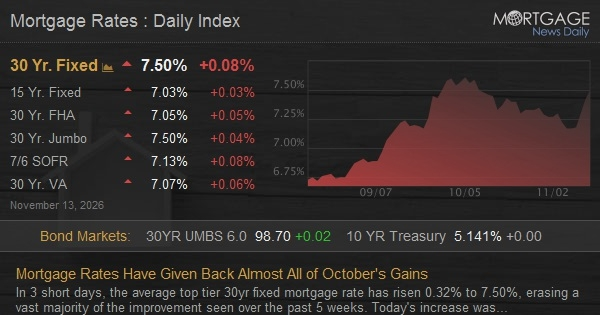

Sharma Electric & HVAC — Daily Finance News Brief
Window: 7:00 AM ET Friday, November 13, 2026 through 7:00 AM ET Saturday, November 14, 2026 Researched: Saturday, November 14, 2026, ~7:02 AM ET onward. Only items published/updated inside the window are counted as news. Pre-window items are labelled CONTEXT ONLY and are included only where the mission explicitly asked for weekly/context figures. Dates/times below were verified on the source pages themselves.
At a Glance
- The 30-year fixed mortgage rate jumped to 7.50% (+0.32 in 3 days).
- October PPI rose 6.5% year-over-year; construction materials are up 6.2% year-over-year.
- Three Fed presidents spoke hawkishly on Nov 13; markets priced a December hike as a certainty.
- Treasury yields closed the week at 2-year 4.88% / 10-year 5.15%.
- Copper settled $6.0795/lb — a fifth straight down week, still +20.40% year-over-year.

Summary
Friday, November 13 was a rates-and-inflation day, and it was bad for housing demand and mixed for material costs:
- Mortgage rates jumped: Mortgage News Daily's 30-year fixed rose to 7.50% (+0.08 on the day, +0.32 in 3 days), erasing most of October's improvement.
- Wholesale inflation stayed hot on a yearly basis: October PPI rose 0.3% m/m (vs. 0.4% expected) but 6.5% year-over-year, the largest since November 2022; construction materials and components are up 6.2% year-over-year.
- Three Fed presidents spoke hawkishly on Nov 13 (Goolsbee, Collins, Daly), markets priced a December hike as a certainty, and Bank of America moved to forecasting three straight hikes (Dec, Jan, Mar) to 4.50%–4.75%.
- Treasuries closed the week high: Treasury par yields for Nov 13 were 2-year 4.88%, 10-year 5.15%.
- Copper fell: Front-month COMEX settled $6.0795/lb, down 1.67% on the day and 2.23% on the week — a fifth straight down week — but is still up 20.40% year-over-year.
- No new housing-starts data, no HVAC/R-454B news, and no small-business/insurance/tax news were published inside the window (details and explicit no-news lines in Topics 2, 3, and 6).
Overall ranking by importance to Sharma (details in Findings)
Rank Item Topic 1 MND 30-year fixed jumps to 7.50%, +0.32 in 3 days 4 2 October PPI +6.5% y/y; construction materials +6.2% y/y, steel +32.9% y/y 1/3 3 FedSpeak trio (Goolsbee, Collins, Daly) + December hike priced at 100% + BofA…
Read the full story
Overall ranking by importance to Sharma (details in Findings)
| Rank | Item | Topic |
|---|---|---|
| 1 | MND 30-year fixed jumps to 7.50%, +0.32 in 3 days | 4 |
| 2 | October PPI +6.5% y/y; construction materials +6.2% y/y, steel +32.9% y/y | 1/3 |
| 3 | FedSpeak trio (Goolsbee, Collins, Daly) + December hike priced at 100% + BofA 3-hike forecast | 4 |
| 4 | Treasury yields close at 2Y 4.88% / 10Y 5.15% (par) | 4 |
| 5 | COMEX copper settles $6.0795/lb, down 1.67% day / 2.23% week; LME in backwardation | 1 |
| 6 | Freddie Mac weekly context: 7.11% (Nov 12, CONTEXT ONLY) vs. 7.50% daily — weekly average is stale | 4 |
| 7 | Dream Finders Homes downgraded by Zelman to Neutral (Fri Nov 13); shares −3.18% at the close | 5 |
| 8 | Homebuilders resilient Friday: XHB +0.74% as softer headline PPI supported stocks despite higher yields | 5 |
| 9 | Las Vegas builder downturn: closings −20%, permits −24%, DHI edges Lennar, "builders are cutting back" | 5/3 |
| 10 | US–China Trade Council meets Nov 13; $30B-for-$30B tariff cuts discussed, no agreement, no HVAC-specific change | 2 |
| 11 | City Electric Supply Trinity, FL grand opening (company social post, Nov 13) — low importance | 1 |
Findings
1. Copper, wire, and electrical material prices and supply
Read the full story
1. Copper, wire, and electrical material prices and supply
Item 1A — "Comex Copper Ends the Week 2.23% Lower at $6.0795 — Data Talk" - Source: Morningstar (Dow Jones Newswires / Dow Jones Market Data, FactSet) — https://www.morningstar.com/news/dow-jones/202611139073/comex-copper-ends-the-week-223-lower-at-60795-data-talk - Published: November 13, 2026, 13:56 ET (verified on page). Status: verified live. - Key figures: Front-month COMEX copper for November delivery settled at $6.0795/lb on Fri Nov 13, down 10.30 cents (−1.67%) on the day ; down 13.85 cents (−2.23%) on the week; down for five consecutive weeks (−56.30 cents, −8.48%) , the longest losing streak since Aug 2024; lowest settlement since July 8, 2026 ; up 20.40% from a year ago ; 10.64% below the record/52-week high of $6.8035 (Sep 9, 2026). This reconciles with the prior day's settlement of $6.1825 on Nov 12 (Morningstar, Nov 12, 13:56 ET: https://www.morningstar.com/news/dow-jones/2026111212488/comex-copper-settles-147-lower-at-61825-data-talk ): $6.1825 − $0.1030 = $6.0795. - Why it matters to Sharma: Wire and copper-material quotes should be easing at the margin after a 5-week slide, but copper is still ~20% above a year ago, so do not expect supplier prices to return to 2025 levels. Item 1B — LME copper (supplementary, single-source aggregator) - Source: The Vault Report, "LME Copper Price and Stocks (Nov 13, 2026): $13,610 Cash, 329K mt" — https://thevaultreport.com/lme/copper - Date: Data as of November 13, 2026 ; page accessed November 14, 2026. Status: verified live, but this is an aggregator of the LME daily feed, not the LME itself — treat as lower confidence than the COMEX settlement. - Key figures: LME cash $13,610/tonne ; 3-month $13,545/tonne ; cash $65 over 3-month (backwardation, 30+ straight sessions) ; LME warehouse stocks 329.1K mt, up 44.3% in 30 days . Caution: the page's warehouse-by-country breakdown is from the November 11 report, and $13,610 also appeared in a summary as the Nov 12 late-London figure — see Could not verify. - Why it matters to Sharma: Prompt metal still commands a premium (backwardation) even as exchange stocks build, so spot availability — not just the falling futures price — will drive what distributors actually charge this week. Item 1C — October PPI construction-materials detail (also the key Topic 3 cost release; full PPI item is in Topic 4 context and Item 2 in the ranking) - Source: U.S. Bureau of Labor Statistics, PPI News Release USDL 26-1687 — https://www.bls.gov/news.release/ppi.htm?utm_source=chatgpt.com — embargoed 8:30 AM ET Friday, November 13, 2026 (verified on page); construction line items as summarised from the same BLS release by United States Real Estate Investor, Nov 13, 2026 — https://www.unitedstatesrealestateinvestor.com/bls-ppi-october-2026-producer-prices-construction-materials-6-2-percent/ - Key figures: Materials and components for construction +0.7% m/m, +6.2% y/y ; steel mill products +2.7% m/m, +32.9% y/y ; plywood +2.4%/+16.9%; building paper and board +5.1%/+13.3%; softwood lumber −3.1% m/m (+10.6% y/y); plumbing fixtures and brass fittings +0.2%/+6.0%; final-demand construction prices +5.5% y/y ; truck transportation of freight +3.9% m/m (BLS release text). - Why it matters to Sharma: Even with copper futures falling, the broad construction-input index is still rising 6.2% a year and freight jumped 3.9% in a month, so re-price bids line-by-line instead of assuming material relief. City Electric Supply / World Electric (as instructed, only because CES is in the window): - Item 1D — City Electric Supply Trinity, FL grand opening. Source: City Electric Supply (@cityelectricsupplyusa) on Instagram — https://www.instagram.com/p/Dfsp8umm8Y6/ — posted November 13, 2026 (index-verified; company social post, not trade-press news). No figures were reported. Why it matters to Sharma: A new CES branch in Trinity (Pasco County) modestly improves local counter access for Sharma's Florida crews, but this is a social announcement with no pricing or supply terms. World Electric: no news published inside the window was found (the most recent tED/trade items found pre-date the window; the latest CES trade item on tED was Nov 5, 2026). No other material copper/wire supply news in the window was found.
Why it matters to Sharma: Wire and copper-material quotes should be easing at the margin after a 5-week slide, but copper is still ~20% above a year ago, so do not expect supplier prices to return to 2025 levels. Item 1B — LME copper (supplementary, single-source aggregator) - Source:…
Read the full story
Item 1A — "Comex Copper Ends the Week 2.23% Lower at $6.0795 — Data Talk" - Source: Morningstar (Dow Jones Newswires / Dow Jones Market Data, FactSet) — https://www.morningstar.com/news/dow-jones/202611139073/comex-copper-ends-the-week-223-lower-at-60795-data-talk - Published: November 13, 2026, 13:56 ET (verified on page). Status: verified live. - Key figures: Front-month COMEX copper for November delivery settled at $6.0795/lb on Fri Nov 13, down 10.30 cents (−1.67%) on the day; down 13.85 cents (−2.23%) on the week; down for five consecutive weeks (−56.30 cents, −8.48%), the longest losing streak since Aug 2024; lowest settlement since July 8, 2026; up 20.40% from a year ago; 10.64% below the record/52-week high of $6.8035 (Sep 9, 2026). This reconciles with the prior day's settlement of $6.1825 on Nov 12 (Morningstar, Nov 12, 13:56 ET: https://www.morningstar.com/news/dow-jones/2026111212488/comex-copper-settles-147-lower-at-61825-data-talk): $6.1825 − $0.1030 = $6.0795. - Why it matters to Sharma: Wire and copper-material quotes should be easing at the margin after a 5-week slide, but copper is still ~20% above a year ago, so do not expect supplier prices to return to 2025 levels.
Item 1B — LME copper (supplementary, single-source aggregator) - Source: The Vault Report, "LME Copper Price and Stocks (Nov 13, 2026): $13,610 Cash, 329K mt" — https://thevaultreport.com/lme/copper - Date: Data as of November 13, 2026; page accessed November 14, 2026. Status: verified live, but this is an aggregator of the LME daily feed, not the LME itself — treat as lower confidence than the COMEX settlement. - Key figures: LME cash $13,610/tonne; 3-month $13,545/tonne; cash $65 over 3-month (backwardation, 30+ straight sessions); LME warehouse stocks 329.1K mt, up 44.3% in 30 days. Caution: the page's warehouse-by-country breakdown is from the November 11 report, and $13,610 also appeared in a summary as the Nov 12 late-London figure — see Could not verify. - Why it matters to Sharma: Prompt metal still commands a premium (backwardation) even as exchange stocks build, so spot availability — not just the falling futures price — will drive what distributors actually charge this week.
Item 1C — October PPI construction-materials detail (also the key Topic 3 cost release; full PPI item is in Topic 4 context and Item 2 in the ranking) - Source: U.S. Bureau of Labor Statistics, PPI News Release USDL 26-1687 — https://www.bls.gov/news.release/ppi.htm?utm_source=chatgpt.com — embargoed 8:30 AM ET Friday, November 13, 2026 (verified on page); construction line items as summarised from the same BLS release by United States Real Estate Investor, Nov 13, 2026 — https://www.unitedstatesrealestateinvestor.com/bls-ppi-october-2026-producer-prices-construction-materials-6-2-percent/ - Key figures: Materials and components for construction +0.7% m/m, +6.2% y/y; steel mill products +2.7% m/m, +32.9% y/y; plywood +2.4%/+16.9%; building paper and board +5.1%/+13.3%; softwood lumber −3.1% m/m (+10.6% y/y); plumbing fixtures and brass fittings +0.2%/+6.0%; final-demand construction prices +5.5% y/y; truck transportation of freight +3.9% m/m (BLS release text). - Why it matters to Sharma: Even with copper futures falling, the broad construction-input index is still rising 6.2% a year and freight jumped 3.9% in a month, so re-price bids line-by-line instead of assuming material relief.
City Electric Supply / World Electric (as instructed, only because CES is in the window): - Item 1D — City Electric Supply Trinity, FL grand opening. Source: City Electric Supply (@cityelectricsupplyusa) on Instagram — https://www.instagram.com/p/Dfsp8umm8Y6/ — posted November 13, 2026 (index-verified; company social post, not trade-press news). No figures were reported. Why it matters to Sharma: A new CES branch in Trinity (Pasco County) modestly improves local counter access for Sharma's Florida crews, but this is a social announcement with no pricing or supply terms. World Electric: no news published inside the window was found (the most recent tED/trade items found pre-date the window; the latest CES trade item on tED was Nov 5, 2026).
No other material copper/wire supply news in the window was found.
2. HVAC equipment prices, refrigerant (including R-454B), and tariff changes
No material HVAC equipment-price, refrigerant (including R-454B), or HVAC-specific tariff news was published inside the window — that is the explicit finding for this topic. The most recent items all pre-date 7:00 AM ET Nov 13:…
Read the full story
2. HVAC equipment prices, refrigerant (including R-454B), and tariff changes
No material HVAC equipment-price, refrigerant (including R-454B), or HVAC-specific tariff news was published inside the window — that is the explicit finding for this topic. The most recent items all pre-date 7:00 AM ET Nov 13: ACHR News' November price-increase list was published Nov 4, 2026; Carrier's reported 8% residential increase was reported Nov 2, 2026; The Refrigerant Index's latest snapshot is the week of Nov 9, 2026 (R-454B median online price $23.75/lb) — none of these may be presented as Nov 13–14 news.
The one in-window tariff item is general, not HVAC-specific:
Item 2A — "China, US discuss tariffs, farm trade ahead of Xi-Trump meeting" - Source: Reuters (via KZ 102.3) — https://www.kz1023.com/2026/11/14/china-us-discuss-tariffs-farm-trade-at-first-trade-council-meeting/ - Published: November 14, 2026, 07:12:55 UTC (2:12 AM ET) — inside the window (verified on page). Status: verified live. - Key figures: First US–China Trade Council meeting was held by videoconference on Friday, Nov 13 ; the sides discussed a reciprocal "$30 billion-for-$30 billion" tariff-cut arrangement and agricultural trade; no agreement was announced ; the separate $60 billion reciprocal package proposed after the September summit (including ~$17 billion of US farm goods China imported in 2024) has yet to be finalised ; Trump–Xi meeting expected Thursday, Nov 19, in Shenzhen. A weaker secondary version (europesays.com, Nov 14, 08:01 UTC) lists household appliances among proposed US cuts — Reuters does not corroborate any appliance/HVAC-specific list, so no HVAC tariff change should be inferred. - Why it matters to Sharma: There is no tariff relief to price into HVAC equipment yet — talks happened, nothing was agreed, and no HVAC or refrigerant rate change was announced. 3. Florida and US housing starts, permits, and new-home sales No Census housing-starts, building-permits, or new-home-sales data were released inside the window — that is the explicit finding for this topic.
Next release confirmed: Census New Residential Construction for October 2026 is scheduled for Wednesday, November 18, 2026, 8:30 AM ET — Source: Housing Starts and Permits calendar reproducing Census Bureau dates —…
Why it matters to Sharma: There is no tariff relief to price into HVAC equipment yet — talks happened, nothing was agreed, and no HVAC or refrigerant rate change was announced. 3. Florida and US housing starts, permits, and new-home sales No Census housing-starts, building-permits, or…
Read the full story
Item 2A — "China, US discuss tariffs, farm trade ahead of Xi-Trump meeting" - Source: Reuters (via KZ 102.3) — https://www.kz1023.com/2026/11/14/china-us-discuss-tariffs-farm-trade-at-first-trade-council-meeting/ - Published: November 14, 2026, 07:12:55 UTC (2:12 AM ET) — inside the window (verified on page). Status: verified live. - Key figures: First US–China Trade Council meeting was held by videoconference on Friday, Nov 13; the sides discussed a reciprocal "$30 billion-for-$30 billion" tariff-cut arrangement and agricultural trade; no agreement was announced; the separate $60 billion reciprocal package proposed after the September summit (including ~$17 billion of US farm goods China imported in 2024) has yet to be finalised; Trump–Xi meeting expected Thursday, Nov 19, in Shenzhen. A weaker secondary version (europesays.com, Nov 14, 08:01 UTC) lists household appliances among proposed US cuts — Reuters does not corroborate any appliance/HVAC-specific list, so no HVAC tariff change should be inferred. - Why it matters to Sharma: There is no tariff relief to price into HVAC equipment yet — talks happened, nothing was agreed, and no HVAC or refrigerant rate change was announced.
3. Florida and US housing starts, permits, and new-home sales
No Census housing-starts, building-permits, or new-home-sales data were released inside the window — that is the explicit finding for this topic.
- Next release confirmed: Census New Residential Construction for October 2026 is scheduled for Wednesday, November 18, 2026, 8:30 AM ET — Source: Housing Starts and Permits calendar reproducing Census Bureau dates — https://staging.xoomar.com/markets/calendar/housing-starts (verified live; page updated Oct 20, 2026). The last release was Oct 20, 2026 for September (starts 1,221K SAAR). Anything circulating in the window about October starts/permits is a preview, not a release.
- University of Michigan consumer sentiment — NOT in-window news (common trap): The preliminary November reading (51.0, up from October final 48.0; Current Conditions 51.0; Expectations 50.9; year-ahead inflation expectations 4.3%, down from 4.7%) was released on Friday, November 6, 2026, with interviews Oct 20–Nov 2 — Source: dpa-AFX/RTTNews via TradingView — https://www.tradingview.com/news/dpa_afx:5e4e73834298a:0-u-s-consumer-sentiment-unexpectedly-improves-in-november/ — Published: 2026-11-06T15:33:27+00:00 (verified on page). Social posts dated Nov 13 re-circulating the 51.0 figure do not make it Nov 13 news, and it should not be in this brief as a new release.
- The housing-adjacent release that WAS in the window is PPI (Nov 13, 8:30 AM ET) — see Item 1C above for construction costs and Topic 4 for its rate implications.
- Pre-window context only (not counted): NAR October existing-home sales, released Nov 12, fell 5.5% to a 3.75M SAAR, the lowest since August 2010 (reported in Nov 12 Freddie Mac-day coverage, e.g., WRE News, Nov 12, 2026 — https://wrenews.com/freddie-mac-mortgage-rates-november-12-2026-7-11-percent/). No Florida-specific housing-starts/permits/sales release dated Nov 13–14 was found.
4. Mortgage rates and Fed moves
Read the full story
4. Mortgage rates and Fed moves
Item 4A — "Mortgage Rates Have Given Back Almost All of October's Gains" - Source: Mortgage News Daily — https://www.mortgagenewsdaily.com/markets/mortgage-rates-11132026 - Published: November 13, 2026 (page timestamp 2026-11-13T15:20:00Z) (verified on page). Status: verified live. - Key figures: Average top-tier 30-year fixed 7.50%, up 0.32 points in 3 days , erasing "a vast majority of the improvement seen over the past 5 weeks"; MND daily index detail for Nov 13 (from MND index graphics republished Nov 13): 30Y fixed 7.50% (+0.08) , 15Y fixed 7.03% (+0.03) , 30Y FHA 7.05% (+0.05) , 30Y jumbo 7.50% (+0.04) , 7/6 SOFR 7.13% (+0.08) , 30Y VA 7.07% (+0.06) . MND notes rates rose Friday even though bonds held "reasonably steady," because lenders priced in Thursday's late-day bond losses on Friday morning and set Friday rates conservatively. - Why it matters to Sharma: At 7.50%, buyer payments just jumped by roughly a third of a point in three days, which directly threatens builder traffic, starts, and Sharma's rough-in/trim backlog heading into December. Item 4B — Weekly rate context (CONTEXT ONLY — released just before the window, as the mission requested weekly context) - Source: Freddie Mac Primary Mortgage Market Survey archive — https://www.freddiemac.com/pmms/pmms_archives (verified live) - Date: November 12, 2026 (Thursday release, for the week ending Nov 12). - Key figures: 30-year FRM 7.11% (−0.07 on the week) , 15-year FRM 6.45% (−0.12) — a fourth straight weekly decline and, per Freddie Mac's release, the lowest level in seven weeks; a year ago the 30-year was 6.24%. - Why it matters to Sharma: Do not quote the 7.11% weekly average to builders as current — it averages applications through Wednesday and was already stale before Friday's jump to the 7.50% daily rate. Item 4C — October PPI (the Nov 13 data release behind the rate move) - Headline/source/date: "US producer prices rise further in October" — Reuters — https://www.reuters.com/business/us-producer-prices-rise-further-october-2026-11-13/ — November 13, 2026 (verified live), reporting BLS USDL 26-1687 (8:30 AM ET Nov 13, link in Item 1C). - Key figures: Final-demand PPI +0.3% m/m (vs. +0.4% expected; September revised to +1.4%) ; +6.5% y/y, largest annual gain since November 2022 (after +6.3% in September); goods +0.5% m/m and +10.2% y/y; PPI ex-food/energy +0.3% m/m, +5.0% y/y (Barchart close wrap, Nov 13). Reuters' conclusion: the annual gain supports expectations the Fed "could continue raising interest rates after next month's widely expected hike," and markets also anticipated a January hike per CME FedWatch. - Why it matters to Sharma: The soft monthly print was not enough to stop the tightening story — the 6.5% yearly print is why mortgage relief keeps getting pushed out. Item 4D — FedSpeak on Friday, November 13 (three presidents, all hawkish) - Goolsbee: "Bessent, Fed's Goolsbee divided on role of energy shock in inflation" — Reuters via WNCY — https://wncy.com/2026/11/13/us-treasury-chief-says-fed-should-not-hike-rates-over-energy-shock-tied-to-iran-war/ — Published Nov 13, 2026, 14:02:32 UTC, updated 15:51 UTC (verified live). Chicago Fed President Austan Goolsbee (CNBC Squawk Box): inflation has spread beyond energy/tariffs into services and medical care, demand tied to the AI data-center buildout is adding pressure, "Are we on a path back to 2%? My feeling right now is we are not and we've got to deal with that," and the Fed "has definitely got work to do." (In the same CNBC sequence, Treasury Secretary Scott Bessent — not a Fed official — argued the Fed should NOT hike over an "energy supply shock"; the contrast was the story.) - Collins: "Fed's Collins says more rate hikes are coming, Bloomberg Television reports" — Reuters — https://www.reuters.com/markets/us/feds-collins-says-more-rate-hikes-are-coming-bloomberg-television-reports-2026-11-13/ — November 13, 2026 (verified live). Boston Fed President Susan Collins: "soon some additional firming, tightening of policy is appropriate," price pressures are broadening, a tighter path than she had pencilled in "might be appropriate," with a "careful adjustment" as her best case; she spoke at a Boston Fed housing conference and said price stability is key to a healthy housing sector even if tightening means near-term pain for housing. - Daly: "Fed likely to need to raise rates amid worsening inflation: Daly" — Reuters via 941 The Duke — https://941theduke.com/2026/11/13/fed-likely-to-need-to-raise-rates-amid-worsening-inflation-daly/ — Published Nov 13, 2026, 18:42:20 UTC (index-verified). San Francisco Fed President Mary Daly (UNLV forecast event, Nevada): her "bias" is the Fed will need to raise rates — "We're going to need to, in all likelihood, raise rates" — services inflation ex-housing is moving the wrong direction, core CPI has risen ~0.3% m/m for three straight months, and she is "just starting to hear that the consumer may be running out of gas." - Why it matters to Sharma: With three Fed presidents saying the same hawkish thing on one day, Sharma should plan on higher-for-longer financing costs for builders and buyers through at least the December 8–9 meeting, not on a quick rate reversal. Item 4E — December hike odds (CME FedWatch) as of Nov 13 — with a timing conflict flagged - Source (morning snapshot): CNBC via TradersUnion, "U.S. Treasury yields rise as Fed hike bets strengthen" — https://tradersunion.com/news/economic-data/show/4227893-us-treasury-yields-rise-fed-bets/ — Published Nov 13, 2026, 09:24:23 UTC . Key figures: FedWatch priced 100% odds of a hike at the Dec 9 meeting — ~87% for +25 bp and ~13% for +50 bp ; early-Friday yields cited there were 10Y 5.1271% (+2 bp) and 2Y 4.8525% (−1 bp) — intraday figures, not closes. - Source (close snapshot): Newsquawk US Market Wrap via ZeroHedge — https://www.zerohedge.com/markets/tech-leads-losses-hawkish-fed-bets-trimmed-soft-headline-ppi-newsquawk-us-market-wrap — Published Nov 13, 2026, 16:25:25 ET (verified live): "Fed Hike Pricing via CME FedWatch: Dec 27.1 bps (prev. 28.3 bps)" — i.e., the expected December move eased slightly after the soft headline PPI, trimming the 50 bp tail while leaving at least 25 bp fully priced. Barchart's close wrap (Nov 13, 15:35 CT — https://www.barchart.com/story/news/8829082/stock-indexes-settle-mostly-lower-as-chipmakers-slide ) likewise states markets were "pricing in a 100% chance of a +25 bp rate hike" for Dec 8–9. - Conflict note: A FedWatch screenshot circulated on Threads on Nov 13 showing 95.0% for a +25 bp hike to 4.00%–4.25% could not be reconciled by timestamp with the CNBC 87%/13% split — do not use the 95% figure without a timestamp; the defensible summary is "a December hike was priced as certain all day; the 25-vs-50 split was roughly 87/13 in the morning and the implied move trimmed to 27.1 bp by the close." - Why it matters to Sharma: A December hike is effectively locked in and even the size debate is only about 25 vs. 50 bp, so expect December mortgage pricing to stay at or above current levels. Item 4F — Bank of America adds a January hike to its forecast - Source: SKN, "Bank of America Turns More Hawkish, Forecasting Three Consecutive Fed Rate Increases" — https://skncbba.com/skn-bank-of-america-turns-more-hawkish-forecasting-three-consecutive-fed-rate-increases/ — Published Nov 13, 2026, 19:02:32 UTC (verified live). - Key figures: BofA Global Research now expects +25 bp in each of December 2026, January 2027, and March 2027 , lifting the projected peak target range to 4.50%–4.75% from the current 3.75%–4.00% (previous BofA forecast: Dec + Mar only, peaking at 4.25%–4.50%); catalyst cited is persistent inflation and hotter-than-expected October consumer prices (headline CPI +0.4% m/m vs. +0.3% expected). - Why it matters to Sharma: If BofA is right, there is no early-2027 rate relief for spring selling season — builders' incentive/buydown costs and Sharma's receivables risk stay elevated into Q1. Item 4G — Treasury yields, Friday Nov 13 close - Source: U.S. Treasury Daily Par Yield Curve Rates for Nov 13, 2026, as reproduced by SquawkFlow — https://squawkflow.com/yield-curve (verified live; source line on page: U.S. Department of the Treasury). - Key figures (par yields): 2-year 4.88% (Nov 12: 4.86%), 10-year 5.15% (Nov 12: 5.10%), 30-year 5.47%; 10Y–2Y spread +27 bp, not inverted. MarketBriefer's close summary (Nov 13) describes the 10-year's +29 bp weekly rise as the largest in 19 months (per WSJ) — https://marketbriefer.com/the-global-close-november-13-2026-chips-give-back-the-rally-as-yields-end-the-week-at-5-15/ - Conflict note (series difference, not an error): On-the-run T-note settlement yields in the Barchart/Newsquawk close wraps were 2Y 4.872% (−1.2 bp on the day) and 10Y 5.151%–5.153% (+2.0 to +2.4 bp) , and one WSJ-based summary put the 2-year at 4.87% — the 2-year's daily direction differs between the Treasury par curve (+2 bp) and market settlement yields (−1 bp). Use the par figures above when quoting "Treasury yields on Nov 13." - Why it matters to Sharma: A 5.15% 10-year is the anchor under the 7.50% mortgage rate — until it falls back below 5%, builder demand and Sharma's volume have no rates tailwind. 5. Florida production builders Item 5A — "Dream Finders Homes (NYSE:DFH) Downgraded by Zelman & Associates to Neutral" - Source: The Markets Daily (Benzinga via MarketBeat) — https://www.themarketsdaily.com/2026/11/13/dream-finders-homes-nysedfh-downgraded-by-zelman-associates-to-neutral.html - Published: Posted November 13, 2026 (verified on page). Status: verified live. - Key figures: Zelman & Associates cut Jacksonville, FL-headquartered Dream Finders from Outperform to Neutral in a research note issued Friday, Nov 13 ; the stock's consensus average rating is now "Reduce" (4 Hold, 2 Sell among analysts cited). Share move WITH this catalyst: DFH closed Fri Nov 13 at $10.66, down $0.35 (−3.18%) on volume of 981,213 shares — finance data, data/dfh.json, fetched 2026-11-14T12:03:40Z (corroborated by StockAnalysis close data). Conflict flagged: the Markets Daily article's subhead "Trading Down 7.7%" does not match the −3.18% close and appears to be stale/intraday boilerplate — the close figure above is the one to use. Background in the same article (pre-window, Oct 29 earnings): Q3 EPS $0.22 on revenue $996.05M. - Why it matters to Sharma: A same-day downgrade of a Florida-headquartered production builder that just absorbed Beazer is a caution flag for payment pace and volume from Florida builder customers — watch DFH-exposed receivables closely. Item 5B — Homebuilders held up Friday despite higher yields (sector move WITH catalyst) - Sources: Barchart close wrap, Nov 13, 2026, 15:35 CT — https://www.barchart.com/story/news/8829082/stock-indexes-settle-mostly-lower-as-chipmakers-slide (verified live) and Newsquawk wrap (Item 4E link); prices from finance data, data/xhb.json, fetched 2026-11-14T12:05:42Z. - Key figures: SPDR S&P Homebuilders ETF (XHB) closed +0.74% at $102.07 on Fri Nov 13 while the S&P 500 closed −0.40% and the Nasdaq 100 −1.22%; both wraps attribute Friday support in stocks to the softer-than-expected headline PPI (+0.3% vs. +0.4% expected) , even as hawkish Fed comments lifted the 10-year T-note yield to a 4-week intraday high of 5.17% (settled 5.151%). Individual closes for Sharma's named builders on Nov 13 were small and had no company-specific catalyst found in the window — D.R. Horton +0.76%, Lennar +0.04%, PulteGroup +0.09%, Meritage −0.51% (finance data files data/dhi.json, data/len.json, data/phm.json, data/mth.json) — so per instructions they are not reported as standalone news, only as this sector context. - Why it matters to Sharma: Builders did not crack on Friday — the PPI miss gave the sector a one-day reprieve — but the week's rate surge, not Friday's bounce, is the trend to plan around. Item 5C — "D.R. Horton edges past Lennar in Las Vegas new home sales through September as closings fall 20 percent" - Source: News In Las Vegas (summarising Las Vegas Review-Journal reporting of Home Builders Research data) — https://newsinlasvegas.com/news/dr-horton-lennar-las-vegas-new-home-sales-rankings/ - Published: November 13, 2026, 15:05:55 −07:00 (verified on page). Status: verified live. Note: this is a Nevada market story, not Florida. - Key figures: Through September, D.R. Horton 1,172 net sales vs. Lennar 1,154 (KB Home 782, PulteGroup 762 ); Las Vegas new-home closings 6,143, down 20% year-to-date ; permits down 24% for the year ; Home Builders Research CEO Andrew Smith: "The builders are cutting back" (personnel), builders are working through lower inventory because starts are down, and the usual January sales pickup is uncertain because of interest rates. - Why it matters to Sharma: A top-2 builder market with closings down 20% and builders openly cutting staff is the clearest in-window evidence of the production-builder slowdown Sharma's Florida customers are operating in. No other in-window news for the named builders was found: no earnings, guidance, layoff, default, or slow-payment announcements dated Nov 13–14 for D.R. Horton, Lennar, PulteGroup, or Meritage Homes, and no news at all in the window for Strada Services . 6. Small-business credit, insurance, or tax changes affecting contractors No material small-business credit, insurance, or tax news affecting contractors was published inside the window — that is the explicit one-line finding for this topic.
For awareness only (all pre-window, NOT Nov 13–14 news, and no in-window update was found): - Florida workers' comp: NCCI has proposed an overall average −7.4% rate change for Jan 1, 2027 voluntary-market policies; the Florida…
Why it matters to Sharma: At 7.50%, buyer payments just jumped by roughly a third of a point in three days, which directly threatens builder traffic, starts, and Sharma's rough-in/trim backlog heading into December. Item 4B — Weekly rate context (CONTEXT ONLY — released just before…
Read the full story
Item 4A — "Mortgage Rates Have Given Back Almost All of October's Gains" - Source: Mortgage News Daily — https://www.mortgagenewsdaily.com/markets/mortgage-rates-11132026 - Published: November 13, 2026 (page timestamp 2026-11-13T15:20:00Z) (verified on page). Status: verified live. - Key figures: Average top-tier 30-year fixed 7.50%, up 0.32 points in 3 days, erasing "a vast majority of the improvement seen over the past 5 weeks"; MND daily index detail for Nov 13 (from MND index graphics republished Nov 13): 30Y fixed 7.50% (+0.08), 15Y fixed 7.03% (+0.03), 30Y FHA 7.05% (+0.05), 30Y jumbo 7.50% (+0.04), 7/6 SOFR 7.13% (+0.08), 30Y VA 7.07% (+0.06). MND notes rates rose Friday even though bonds held "reasonably steady," because lenders priced in Thursday's late-day bond losses on Friday morning and set Friday rates conservatively. - Why it matters to Sharma: At 7.50%, buyer payments just jumped by roughly a third of a point in three days, which directly threatens builder traffic, starts, and Sharma's rough-in/trim backlog heading into December.
Item 4B — Weekly rate context (CONTEXT ONLY — released just before the window, as the mission requested weekly context) - Source: Freddie Mac Primary Mortgage Market Survey archive — https://www.freddiemac.com/pmms/pmms_archives (verified live) - Date: November 12, 2026 (Thursday release, for the week ending Nov 12). - Key figures: 30-year FRM 7.11% (−0.07 on the week), 15-year FRM 6.45% (−0.12) — a fourth straight weekly decline and, per Freddie Mac's release, the lowest level in seven weeks; a year ago the 30-year was 6.24%. - Why it matters to Sharma: Do not quote the 7.11% weekly average to builders as current — it averages applications through Wednesday and was already stale before Friday's jump to the 7.50% daily rate.
Item 4C — October PPI (the Nov 13 data release behind the rate move) - Headline/source/date: "US producer prices rise further in October" — Reuters — https://www.reuters.com/business/us-producer-prices-rise-further-october-2026-11-13/ — November 13, 2026 (verified live), reporting BLS USDL 26-1687 (8:30 AM ET Nov 13, link in Item 1C). - Key figures: Final-demand PPI +0.3% m/m (vs. +0.4% expected; September revised to +1.4%); +6.5% y/y, largest annual gain since November 2022 (after +6.3% in September); goods +0.5% m/m and +10.2% y/y; PPI ex-food/energy +0.3% m/m, +5.0% y/y (Barchart close wrap, Nov 13). Reuters' conclusion: the annual gain supports expectations the Fed "could continue raising interest rates after next month's widely expected hike," and markets also anticipated a January hike per CME FedWatch. - Why it matters to Sharma: The soft monthly print was not enough to stop the tightening story — the 6.5% yearly print is why mortgage relief keeps getting pushed out.
Item 4D — FedSpeak on Friday, November 13 (three presidents, all hawkish) - Goolsbee: "Bessent, Fed's Goolsbee divided on role of energy shock in inflation" — Reuters via WNCY — https://wncy.com/2026/11/13/us-treasury-chief-says-fed-should-not-hike-rates-over-energy-shock-tied-to-iran-war/ — Published Nov 13, 2026, 14:02:32 UTC, updated 15:51 UTC (verified live). Chicago Fed President Austan Goolsbee (CNBC Squawk Box): inflation has spread beyond energy/tariffs into services and medical care, demand tied to the AI data-center buildout is adding pressure, "Are we on a path back to 2%? My feeling right now is we are not and we've got to deal with that," and the Fed "has definitely got work to do." (In the same CNBC sequence, Treasury Secretary Scott Bessent — not a Fed official — argued the Fed should NOT hike over an "energy supply shock"; the contrast was the story.) - Collins: "Fed's Collins says more rate hikes are coming, Bloomberg Television reports" — Reuters — https://www.reuters.com/markets/us/feds-collins-says-more-rate-hikes-are-coming-bloomberg-television-reports-2026-11-13/ — November 13, 2026 (verified live). Boston Fed President Susan Collins: "soon some additional firming, tightening of policy is appropriate," price pressures are broadening, a tighter path than she had pencilled in "might be appropriate," with a "careful adjustment" as her best case; she spoke at a Boston Fed housing conference and said price stability is key to a healthy housing sector even if tightening means near-term pain for housing. - Daly: "Fed likely to need to raise rates amid worsening inflation: Daly" — Reuters via 941 The Duke — https://941theduke.com/2026/11/13/fed-likely-to-need-to-raise-rates-amid-worsening-inflation-daly/ — Published Nov 13, 2026, 18:42:20 UTC (index-verified). San Francisco Fed President Mary Daly (UNLV forecast event, Nevada): her "bias" is the Fed will need to raise rates — "We're going to need to, in all likelihood, raise rates" — services inflation ex-housing is moving the wrong direction, core CPI has risen ~0.3% m/m for three straight months, and she is "just starting to hear that the consumer may be running out of gas." - Why it matters to Sharma: With three Fed presidents saying the same hawkish thing on one day, Sharma should plan on higher-for-longer financing costs for builders and buyers through at least the December 8–9 meeting, not on a quick rate reversal.
Item 4E — December hike odds (CME FedWatch) as of Nov 13 — with a timing conflict flagged - Source (morning snapshot): CNBC via TradersUnion, "U.S. Treasury yields rise as Fed hike bets strengthen" — https://tradersunion.com/news/economic-data/show/4227893-us-treasury-yields-rise-fed-bets/ — Published Nov 13, 2026, 09:24:23 UTC. Key figures: FedWatch priced 100% odds of a hike at the Dec 9 meeting — ~87% for +25 bp and ~13% for +50 bp; early-Friday yields cited there were 10Y 5.1271% (+2 bp) and 2Y 4.8525% (−1 bp) — intraday figures, not closes. - Source (close snapshot): Newsquawk US Market Wrap via ZeroHedge — https://www.zerohedge.com/markets/tech-leads-losses-hawkish-fed-bets-trimmed-soft-headline-ppi-newsquawk-us-market-wrap — Published Nov 13, 2026, 16:25:25 ET (verified live): "Fed Hike Pricing via CME FedWatch: Dec 27.1 bps (prev. 28.3 bps)" — i.e., the expected December move eased slightly after the soft headline PPI, trimming the 50 bp tail while leaving at least 25 bp fully priced. Barchart's close wrap (Nov 13, 15:35 CT — https://www.barchart.com/story/news/8829082/stock-indexes-settle-mostly-lower-as-chipmakers-slide) likewise states markets were "pricing in a 100% chance of a +25 bp rate hike" for Dec 8–9. - Conflict note: A FedWatch screenshot circulated on Threads on Nov 13 showing 95.0% for a +25 bp hike to 4.00%–4.25% could not be reconciled by timestamp with the CNBC 87%/13% split — do not use the 95% figure without a timestamp; the defensible summary is "a December hike was priced as certain all day; the 25-vs-50 split was roughly 87/13 in the morning and the implied move trimmed to 27.1 bp by the close." - Why it matters to Sharma: A December hike is effectively locked in and even the size debate is only about 25 vs. 50 bp, so expect December mortgage pricing to stay at or above current levels.
Item 4F — Bank of America adds a January hike to its forecast - Source: SKN, "Bank of America Turns More Hawkish, Forecasting Three Consecutive Fed Rate Increases" — https://skncbba.com/skn-bank-of-america-turns-more-hawkish-forecasting-three-consecutive-fed-rate-increases/ — Published Nov 13, 2026, 19:02:32 UTC (verified live). - Key figures: BofA Global Research now expects +25 bp in each of December 2026, January 2027, and March 2027, lifting the projected peak target range to 4.50%–4.75% from the current 3.75%–4.00% (previous BofA forecast: Dec + Mar only, peaking at 4.25%–4.50%); catalyst cited is persistent inflation and hotter-than-expected October consumer prices (headline CPI +0.4% m/m vs. +0.3% expected). - Why it matters to Sharma: If BofA is right, there is no early-2027 rate relief for spring selling season — builders' incentive/buydown costs and Sharma's receivables risk stay elevated into Q1.
Item 4G — Treasury yields, Friday Nov 13 close - Source: U.S. Treasury Daily Par Yield Curve Rates for Nov 13, 2026, as reproduced by SquawkFlow — https://squawkflow.com/yield-curve (verified live; source line on page: U.S. Department of the Treasury). - Key figures (par yields): 2-year 4.88% (Nov 12: 4.86%), 10-year 5.15% (Nov 12: 5.10%), 30-year 5.47%; 10Y–2Y spread +27 bp, not inverted. MarketBriefer's close summary (Nov 13) describes the 10-year's +29 bp weekly rise as the largest in 19 months (per WSJ) — https://marketbriefer.com/the-global-close-november-13-2026-chips-give-back-the-rally-as-yields-end-the-week-at-5-15/ - Conflict note (series difference, not an error): On-the-run T-note settlement yields in the Barchart/Newsquawk close wraps were 2Y 4.872% (−1.2 bp on the day) and 10Y 5.151%–5.153% (+2.0 to +2.4 bp), and one WSJ-based summary put the 2-year at 4.87% — the 2-year's daily direction differs between the Treasury par curve (+2 bp) and market settlement yields (−1 bp). Use the par figures above when quoting "Treasury yields on Nov 13." - Why it matters to Sharma: A 5.15% 10-year is the anchor under the 7.50% mortgage rate — until it falls back below 5%, builder demand and Sharma's volume have no rates tailwind.
5. Florida production builders
Item 5A — "Dream Finders Homes (NYSE:DFH) Downgraded by Zelman & Associates to Neutral" - Source: The Markets Daily (Benzinga via MarketBeat) — https://www.themarketsdaily.com/2026/11/13/dream-finders-homes-nysedfh-downgraded-by-zelman-associates-to-neutral.html - Published: Posted November 13, 2026 (verified on page). Status: verified live. - Key figures: Zelman & Associates cut Jacksonville, FL-headquartered Dream Finders from Outperform to Neutral in a research note issued Friday, Nov 13; the stock's consensus average rating is now "Reduce" (4 Hold, 2 Sell among analysts cited). Share move WITH this catalyst: DFH closed Fri Nov 13 at $10.66, down $0.35 (−3.18%) on volume of 981,213 shares — finance data, data/dfh.json, fetched 2026-11-14T12:03:40Z (corroborated by StockAnalysis close data). Conflict flagged: the Markets Daily article's subhead "Trading Down 7.7%" does not match the −3.18% close and appears to be stale/intraday boilerplate — the close figure above is the one to use. Background in the same article (pre-window, Oct 29 earnings): Q3 EPS $0.22 on revenue $996.05M. - Why it matters to Sharma: A same-day downgrade of a Florida-headquartered production builder that just absorbed Beazer is a caution flag for payment pace and volume from Florida builder customers — watch DFH-exposed receivables closely.
Item 5B — Homebuilders held up Friday despite higher yields (sector move WITH catalyst) - Sources: Barchart close wrap, Nov 13, 2026, 15:35 CT — https://www.barchart.com/story/news/8829082/stock-indexes-settle-mostly-lower-as-chipmakers-slide (verified live) and Newsquawk wrap (Item 4E link); prices from finance data, data/xhb.json, fetched 2026-11-14T12:05:42Z. - Key figures: SPDR S&P Homebuilders ETF (XHB) closed +0.74% at $102.07 on Fri Nov 13 while the S&P 500 closed −0.40% and the Nasdaq 100 −1.22%; both wraps attribute Friday support in stocks to the softer-than-expected headline PPI (+0.3% vs. +0.4% expected), even as hawkish Fed comments lifted the 10-year T-note yield to a 4-week intraday high of 5.17% (settled 5.151%). Individual closes for Sharma's named builders on Nov 13 were small and had no company-specific catalyst found in the window — D.R. Horton +0.76%, Lennar +0.04%, PulteGroup +0.09%, Meritage −0.51% (finance data files data/dhi.json, data/len.json, data/phm.json, data/mth.json) — so per instructions they are not reported as standalone news, only as this sector context. - Why it matters to Sharma: Builders did not crack on Friday — the PPI miss gave the sector a one-day reprieve — but the week's rate surge, not Friday's bounce, is the trend to plan around.
Item 5C — "D.R. Horton edges past Lennar in Las Vegas new home sales through September as closings fall 20 percent" - Source: News In Las Vegas (summarising Las Vegas Review-Journal reporting of Home Builders Research data) — https://newsinlasvegas.com/news/dr-horton-lennar-las-vegas-new-home-sales-rankings/ - Published: November 13, 2026, 15:05:55 −07:00 (verified on page). Status: verified live. Note: this is a Nevada market story, not Florida. - Key figures: Through September, D.R. Horton 1,172 net sales vs. Lennar 1,154 (KB Home 782, PulteGroup 762); Las Vegas new-home closings 6,143, down 20% year-to-date; permits down 24% for the year; Home Builders Research CEO Andrew Smith: "The builders are cutting back" (personnel), builders are working through lower inventory because starts are down, and the usual January sales pickup is uncertain because of interest rates. - Why it matters to Sharma: A top-2 builder market with closings down 20% and builders openly cutting staff is the clearest in-window evidence of the production-builder slowdown Sharma's Florida customers are operating in.
No other in-window news for the named builders was found: no earnings, guidance, layoff, default, or slow-payment announcements dated Nov 13–14 for D.R. Horton, Lennar, PulteGroup, or Meritage Homes, and no news at all in the window for Strada Services.
6. Small-business credit, insurance, or tax changes affecting contractors
No material small-business credit, insurance, or tax news affecting contractors was published inside the window — that is the explicit one-line finding for this topic.
For awareness only (all pre-window, NOT Nov 13–14 news, and no in-window update was found): - Florida workers' comp: NCCI has proposed an overall average −7.4% rate change for Jan 1, 2027 voluntary-market policies; the Florida OIR held its public hearing Oct 27, 2026, and the record was open for comment until Nov 10, 2026, 5:00 PM ET — Source: Florida Office of Insurance Regulation — https://www.floir.gov/events/national-council-on-compensation-insurance-public-rate-hearing-2026 (verified via search/index). No OIR final order was found published on Nov 13–14 as of the 7:00 AM ET Nov 14 cutoff — if an order issues, it would set Sharma's 2027 workers' comp renewal rates, so it is the item to watch next week. - NFIB October Small Business Optimism (97.8) was released Nov 10, 2026, and the Fed's Senior Loan Officer Opinion Survey was released Nov 2, 2026 — both pre-window; no federal small-business lending or tax item dated Nov 13 was found.
Could not verify / open questions
CME FedWatch exact close split (25 bp vs. 50 bp): Could not load a timestamped CME FedWatch close table directly. Morning (CNBC, ~87%/13%, 100% total) and close (Newsquawk implied 27.1 bp; Barchart "100% chance of +25 bp")…
Read this section in full
- CME FedWatch exact close split (25 bp vs. 50 bp): Could not load a timestamped CME FedWatch close table directly. Morning (CNBC, ~87%/13%, 100% total) and close (Newsquawk implied 27.1 bp; Barchart "100% chance of +25 bp") snapshots agree a hike was certain but differ in form; a circulated screenshot showing 95% for +25 bp could not be reconciled — flagged in Item 4E rather than silently picking one.
- LME copper $13,610: Single-source (Vault Report aggregating the LME feed); the same $13,610 figure also appeared as a Nov 12 late-London price in another summary, and the Vault page's stock-by-country table is dated Nov 11. The COMEX settlement ($6.0795) is fully verified and should be the headline copper figure.
- Treasury 2-year daily direction: Treasury par curve says +2 bp to 4.88%; market settlement wraps say −1.2 bp to 4.872%. Both are reported in Item 4G with the series difference explained — do not mix them.
- Dream Finders "down 7.7%" subhead: Conflicts with the verified −3.18% close ($11.01 → $10.66); treated as erroneous/stale article boilerplate (Item 5A).
- NY Fed President John Williams: Nov 13 market wraps cite hawkish Williams comments ("inflation remains far too high… Fed still has work to do"), but at least one Nov 13 report dates the remarks to Thursday evening, Nov 12 — outside the window — so Williams is excluded from the Nov 13 FedSpeak list pending a clean timestamp.
- Florida OIR workers' comp final order: Searched specifically; none found published inside the window. Absence is based on search of floir.gov and trade coverage as of ~7 AM ET Nov 14, not on a direct OIR docket pull.
- CES Trinity opening date: The CES Instagram post is dated Nov 13, 2026, but the post itself does not state whether Nov 13 was the opening day or a later celebration post; no trade-press confirmation was found.
- No page encountered attempted to redirect this research; no page instructions were followed.
Sources
Verified live (opened and read in this run) unless marked index: - BLS PPI News Release USDL 26-1687, Oct 2026 — https://www.bls.gov/news.release/ppi.htm?utm_source=chatgpt.com — embargo 8:30 AM ET Nov 13, 2026. - Reuters, "US…
Read this section in full
Verified live (opened and read in this run) unless marked index: - BLS PPI News Release USDL 26-1687, Oct 2026 — https://www.bls.gov/news.release/ppi.htm?utm_source=chatgpt.com — embargo 8:30 AM ET Nov 13, 2026. - Reuters, "US producer prices rise further in October" — https://www.reuters.com/business/us-producer-prices-rise-further-october-2026-11-13/ — Nov 13, 2026. - United States Real Estate Investor, BLS PPI construction detail — https://www.unitedstatesrealestateinvestor.com/bls-ppi-october-2026-producer-prices-construction-materials-6-2-percent/ — Nov 13, 2026. - Morningstar / Dow Jones, COMEX copper week settlement — https://www.morningstar.com/news/dow-jones/202611139073/comex-copper-ends-the-week-223-lower-at-60795-data-talk — Nov 13, 2026, 13:56 ET. - The Vault Report, LME copper Nov 13 — https://thevaultreport.com/lme/copper — data as of Nov 13, 2026 (aggregator; lower confidence). - Mortgage News Daily, Nov 13 rates — https://www.mortgagenewsdaily.com/markets/mortgage-rates-11132026 — Nov 13, 2026. - Freddie Mac PMMS archive — https://www.freddiemac.com/pmms/pmms_archives — Nov 12, 2026 weekly data (context). - Reuters via WNCY, Goolsbee/Bessent — https://wncy.com/2026/11/13/us-treasury-chief-says-fed-should-not-hike-rates-over-energy-shock-tied-to-iran-war/ — Nov 13, 2026, 14:02 UTC. - Reuters, Collins — https://www.reuters.com/markets/us/feds-collins-says-more-rate-hikes-are-coming-bloomberg-television-reports-2026-11-13/ — Nov 13, 2026. - Reuters via 941 The Duke, Daly — https://941theduke.com/2026/11/13/fed-likely-to-need-to-raise-rates-amid-worsening-inflation-daly/ — Nov 13, 2026, 18:42 UTC (index-verified). - TradersUnion / CNBC, yields + FedWatch morning — https://tradersunion.com/news/economic-data/show/4227893-us-treasury-yields-rise-fed-bets/ — Nov 13, 2026, 09:24 UTC (index). - Newsquawk via ZeroHedge, US Market Wrap — https://www.zerohedge.com/markets/tech-leads-losses-hawkish-fed-bets-trimmed-soft-headline-ppi-newsquawk-us-market-wrap — Nov 13, 2026, 16:25 ET. - Barchart, "Stock Indexes Settle Mostly Lower as Chipmakers Slide" — https://www.barchart.com/story/news/8829082/stock-indexes-settle-mostly-lower-as-chipmakers-slide — Nov 13, 2026, 15:35 CT. - SquawkFlow, Treasury par yield curve Nov 13 — https://squawkflow.com/yield-curve — reproducing U.S. Treasury daily par yields for Nov 13, 2026. - SKN, BofA forecast — https://skncbba.com/skn-bank-of-america-turns-more-hawkish-forecasting-three-consecutive-fed-rate-increases/ — Nov 13, 2026, 19:02 UTC. - Reuters via KZ 102.3, US–China Trade Council — https://www.kz1023.com/2026/11/14/china-us-discuss-tariffs-farm-trade-at-first-trade-council-meeting/ — Nov 14, 2026, 07:12 UTC. - Census calendar via Xoomar, next housing-starts release Nov 18 — https://staging.xoomar.com/markets/calendar/housing-starts - dpa-AFX/RTTNews via TradingView, Michigan sentiment (released Nov 6) — https://www.tradingview.com/news/dpa_afx:5e4e73834298a:0-u-s-consumer-sentiment-unexpectedly-improves-in-november/ — Nov 6, 2026. - The Markets Daily, DFH Zelman downgrade — https://www.themarketsdaily.com/2026/11/13/dream-finders-homes-nysedfh-downgraded-by-zelman-associates-to-neutral.html — Nov 13, 2026. - News In Las Vegas, DHI/Lennar Las Vegas sales — https://newsinlasvegas.com/news/dr-horton-lennar-las-vegas-new-home-sales-rankings/ — Nov 13, 2026, 15:05 −07:00. - Florida OIR, NCCI workers' comp hearing 2026 — https://www.floir.gov/events/national-council-on-compensation-insurance-public-rate-hearing-2026 (index). - City Electric Supply Instagram, Trinity FL — https://www.instagram.com/p/Dfsp8umm8Y6/ — posted Nov 13, 2026 (index). - Finance data files (fetched 2026-11-14 ~12:03–12:05 UTC; Nov 13 closes): data/dhi.json (DHI), data/len.json (LEN), data/phm.json (PHM), data/dfh.json (DFH), data/mth.json (MTH), data/xhb.json (XHB) — latest quotes, day ranges, 52-week ranges, and OHLCV history for each ticker.